The Heavyweights
Top Tier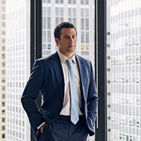
Alex Spiro
"The Fixer"
Quinn Emanuel Urquhart & Sullivan · New York
The most in-demand celebrity lawyer alive. Harvard Law grad and former Manhattan prosecutor who convicted the "Dating Game" serial killer. Charges $3,000 per hour. Hasn't lost a case in over a decade. Has publicly said he only sleeps around four hours a night due to insomnia, which he credits with giving him a competitive edge. If you're famous and in trouble, Spiro's phone rings first. Tried over 50 cases to verdict. Got Alec Baldwin's manslaughter charge dismissed. Got Eric Adams' federal corruption case dismissed with prejudice. Defended Jay-Z against sexual assault allegations where the plaintiff eventually dropped the suit. Represented Elon Musk in multiple cases including the Twitter acquisition fight.
Notable Clients
Elon MuskJay-ZAlec BaldwinEric AdamsMegan Thee StallionMrBeastAaron HernandezMick JaggerRobert KraftBobby Shmurda21 SavageNaomi Osaka
On Celebrity Dockets
Bryan Freedman
"The Terminator"
Freedman + Taitelman · Los Angeles
One of Hollywood's most respected and fiercely passionate litigators. Freedman fights for his clients with unmatched intensity, which is exactly why the biggest names in entertainment call him when the stakes are highest. Nicknamed "The Terminator" for his relentless pursuit of favorable outcomes, he represents production companies, executives, and talent in the industry's most high-profile disputes. Currently leading the defense of Justin Baldoni and Wayfarer Studios in the Blake Lively case, where his strategic approach has already secured dismissal of most claims against individual defendants.
On Celebrity Dockets
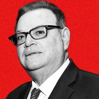
Marty Singer
"Mad Dog"
Singer Weinsten Wolf & Jonelis LLP · Los Angeles
The original celebrity fixer. Has been protecting A-list reputations for decades. His threatening pre-litigation letters are legendary in Hollywood. Studios and tabloids know that when a Marty Singer letter lands, a lawsuit is right behind it. He called the Costner/Horizon stunt performer suit a "shakedown" before it even got to discovery. Clients have included everyone from Arnold Schwarzenegger to Charlie Sheen to John Travolta.
Notable Clients
Kevin CostnerArnold SchwarzeneggerCharlie SheenJohn TravoltaSteven Seagal
On Celebrity Dockets
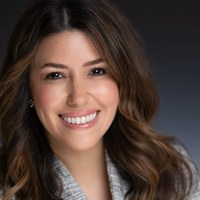
Camille Vasquez
Brown Rudnick · Los Angeles
Became a household name during the Johnny Depp v. Amber Heard defamation trial in 2022. Her cross-examination of Heard went viral and turned her into the most famous trial lawyer of her generation overnight. Promoted to partner at Brown Rudnick during the trial. Now represents production companies and entertainment clients in high-profile disputes.
Notable Clients
Johnny Depp
On Celebrity Dockets
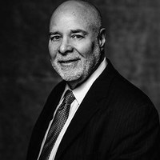
Howard King
King, Holmes, Paterno & Soriano · Los Angeles
One of entertainment law's most experienced litigators. Has represented artists, producers, and executives in music, film, and television disputes for decades. Known for handling cases that involve both legal complexity and intense media scrutiny. Currently leading Ray J's countersuit against Kim Kardashian and Kris Jenner, arguing they breached a $6M settlement by discussing the sex tape on their Hulu show.
On Celebrity Dockets
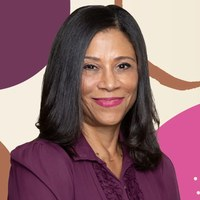
Shawn Holley
Kinsella Weitzman Iser Kump Holley · Los Angeles
One of LA's most powerful criminal defense attorneys. Made her name as part of the O.J. Simpson defense team early in her career. Has been the go-to for celebrities in crisis ever since, from Lindsay Lohan's multiple arrests to Justin Bieber's DUI to Kanye West. Known for getting cases resolved quietly and keeping her clients out of prison.
Notable Clients
Lindsay LohanJustin BieberKanye WestO.J. Simpson (team)Nicole RichieThe Kardashians
On Celebrity Dockets
Marc Agnifilo
Agnifilo Intrater · New York
Won acquittals on the top charges for Sean "Diddy" Combs in his federal RICO and sex-trafficking trial, one of the most watched criminal trials in recent memory. Former federal and state prosecutor. Has tried more than 200 cases in his 30-year career. Served as lead of the Violent Crimes Unit as Assistant U.S. Attorney in New Jersey. Also represented NXIVM founder Keith Raniere, "Pharma Bro" Martin Shkreli, former IMF chief Dominique Strauss-Kahn, and Luigi Mangione. Known for his calm, almost apologetic style in court that masks a deeply strategic mind.
Notable Clients
Sean "Diddy" CombsKeith Raniere (NXIVM)Martin ShkreliDominique Strauss-KahnLuigi MangioneRoger Ng (Goldman)
On Celebrity Dockets
Teny Geragos
Agnifilo Intrater · New York
Partner at Agnifilo Intrater and co-lead on the Diddy defense team where she delivered the opening statement and handled the cross-examination of "Jane," one of the key accusers. Particularly experienced in defending allegations of sexual misconduct. NYU and Loyola Law School graduate. Daughter of famed celebrity defense attorney Mark Geragos, whose clients have included Michael Jackson, Chris Brown, and Winona Ryder. Has worked alongside Marc Agnifilo for eight years on high-profile defense cases including the NXIVM trial.
Notable Clients
Sean "Diddy" CombsKeith Raniere (NXIVM)Roger Ng (Goldman)
On Celebrity Dockets
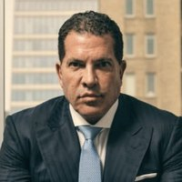
Joe Tacopina
Tacopina Seigel & DeOreo · New York
A fixture on cable news and one of the most recognized defense attorneys in America. Has represented Donald Trump, A$AP Rocky, Alex Rodriguez, Joran van der Sloot, Michael Jackson, and dozens of other high-profile clients across criminal and civil matters. Known for aggressive media strategy and courtroom presence. Currently representing Fat Joe in his defamation and extortion cases.
Notable Clients
Donald TrumpA$AP RockyAlex RodriguezMichael JacksonJoran van der SlootMeek Mill
On Celebrity Dockets
The Trial Lawyers
Courtroom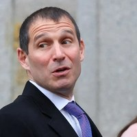
Michael Gottlieb
Willkie Farr & Gallagher · Washington, D.C.
Running two of the biggest cases on Celebrity Dockets simultaneously. Represents Blake Lively in her retaliation case against Wayfarer Studios AND Drake in his defamation appeal against UMG over "Not Like Us." Former White House associate counsel under Obama.
On Celebrity Dockets
Alexandra Shapiro
Shapiro Arato Bach · New York
Appellate specialist who handles the cases after the trial lawyers are done. When you need a ruling overturned, Shapiro is the call. Currently on both the Wayfarer/Baldoni defense team and Diddy's sentencing appeal. Her firm's involvement signals that a case is heading to the appeals court, and that the client is serious about winning there.
On Celebrity Dockets
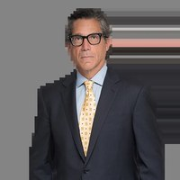
Mathew Rosengart
Greenberg Traurig · Los Angeles
Best known for freeing Britney Spears from her 13-year conservatorship in 2021, the legal victory that launched the #FreeBritney movement into the history books. A former federal prosecutor who now represents artists and public figures in entertainment and civil rights disputes. Currently representing FKA twigs in her STAND Act challenge against Shia LaBeouf's NDA.
Notable Clients
Britney Spears (conservatorship)Sean PennSteven Spielberg
On Celebrity Dockets
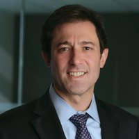
Kevin Fritz
Meister Seelig & Schuster · New York
Part of the defense team for Justin Baldoni and Wayfarer Studios in the Blake Lively case. Works alongside Bryan Freedman and Mitchell Schuster. Handles complex entertainment litigation with a focus on production company disputes and talent conflicts.
On Celebrity Dockets
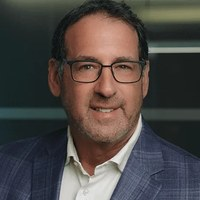
Mitchell Schuster
Meister Seelig & Schuster · New York
Name partner at Meister Seelig & Schuster and a seasoned commercial litigator who represents high-profile clients in complex business disputes, entertainment matters, and contract fights. Part of the Wayfarer Studios defense team alongside Kevin Fritz and Bryan Freedman. Also represents crisis PR specialist Melissa Nathan, who is a defendant in both the Lively v. Wayfarer case AND the Wilson v. Ghost (The Deb) litigation, where leaked texts allegedly tie her PR team to anonymous defamatory websites.
On Celebrity Dockets
Allyson Thompson & Melody Kramer
Hart Kienle Pentecost · Santa Ana, CA
Representing Rebel Wilson in the defamation cross-complaints from Ghost et al over The Deb. Currently pushing an ex parte application to restrict extrajudicial statements by Camille Vasquez, arguing that Ghost's counsel has violated California Rules of Professional Conduct Rule 3.6 through public comments about the case.
On Celebrity Dockets
Ellyn Garofalo
Liner Freedman Taitelman + Cooley · Los Angeles
Writes some of the most admired briefs in the business. A trial attorney with over 30 years of courtroom experience handling civil, criminal, and regulatory matters including SEC enforcement actions. Obtained a defense verdict after an eight-week jury trial in a $100 million partnership dispute. Recognized as a Southern California Super Lawyer from 2006 through 2021 and named to the Top 50 Women in Southern California multiple years. Previously represented stars like Anna Nicole Smith and Alyssa Milano. Joined the Wayfarer defense team for the Lively case. Pepperdine Law graduate.
Notable Clients
Anna Nicole SmithAlyssa Milano
On Celebrity Dockets
Esra Hudson
Manatt, Phelps & Phillips · Los Angeles
Chair of Manatt's Employment and Labor practice. Part of Blake Lively's legal team handling the retaliation claims against Wayfarer Studios. Ranked Chambers USA Top-Ranked Attorney every year from 2022 to 2025. Named Los Angeles Business Journal Top 100 Lawyer in 2025. UCLA Law graduate.
On Celebrity Dockets
Kristin Bender
Willkie Farr & Gallagher · Washington, D.C.
Partner in Willkie Farr's Litigation Department and member of the Crisis Management and Appeals & Strategic Motions Groups. Works alongside Michael Gottlieb on Blake Lively's case against Wayfarer Studios. Previously represented the Kurdistan Regional Government in transnational oil export litigation and the brother of DNC staffer Seth Rich in defamation litigation against viral conspiracy theories.
On Celebrity Dockets
Anne Kiley
Representing Brad Pitt
Lead attorney representing Brad Pitt in his ongoing legal battle with Angelina Jolie over the $164M Château Miraval winery dispute. Has guided Pitt's side through multiple years of litigation involving competing claims, international jurisdiction issues, and Jolie's 2021 sale of her stake to a Stoli vodka affiliate.
On Celebrity Dockets
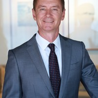
Paul Murphy
Murphy Rosen LLP · Santa Monica
Lead attorney for Angelina Jolie in the Château Miraval winery dispute with Brad Pitt. Has aggressively pursued evidence related to the former couple's 2016 aircraft incident, arguing that Pitt's alleged conduct is central to the broader dispute over the sale of Jolie's stake in the winery. Most recently sought to push the trial to November 2027.
On Celebrity Dockets
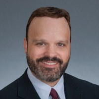
Rollin Ransom
Sidley Austin · Los Angeles (Managing Partner)
Managing Partner of Sidley Austin's Los Angeles office and co-leader of the firm's global Commercial Litigation and Disputes practice. One of the most recognized music industry lawyers in the country. Successfully obtained dismissal of Drake's original defamation suit over "Not Like Us." Named a "Top Music Lawyer" by Billboard every year from 2020 to 2025 and by The Hollywood Reporter in 2025. Previously represented UMG in the Robin Thicke/Pharrell "Blurred Lines" copyright case and defended UMG against a class action involving copyright termination rights. Magna cum laude graduate of University of Michigan Law School and Phi Beta Kappa from Northwestern.
Recognition
Billboard Top Music Lawyer 2020-2025THR Top Music Lawyer 2025Chambers USABenchmark Litigation Star
On Celebrity Dockets
Criminal Defense
Defense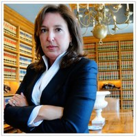
Blair Berk
Berk Brettler LLP · West Hollywood
LA's most elite criminal defense attorney for celebrities. When a famous person gets arrested at 2 AM, Blair Berk is the first call. Has represented an extraordinary list of A-listers through DUIs, drug charges, domestic disputes, and worse. Almost always keeping them out of prison and out of the press. Now co-leading the defense of d4vd in what could be the highest-profile celebrity murder case in years.
Notable Clients
Mel GibsonReese WitherspoonKiefer SutherlandHeather LocklearVince VaughnLindsay LohanBritney Spears
On Celebrity Dockets
Marilyn Bednarski
Kaye, McLane, Bednarski & Litt LLP · Pasadena
Veteran criminal defense and civil rights litigator with decades of complex criminal defense experience. Known for taking on high-stakes federal cases and prison-rights litigation. Co-counsel on the d4vd defense team alongside Blair Berk and Regina Peter, bringing serious trial chops to a death-penalty-eligible murder case.
Practice Areas
Federal Criminal DefenseCivil RightsComplex Trial Litigation
On Celebrity Dockets
Regina Peter
Berk Brettler LLP · West Hollywood
Criminal defense and civil litigation attorney at Blair Berk's firm. Loyola Law School alum. Part of the three-woman defense team representing d4vd in his first-degree murder case, with three special-circumstance allegations making the case death-penalty eligible.
Practice Areas
Criminal DefenseCivil Litigation
On Celebrity Dockets
David Meier
Massachusetts
Defending Stefon Diggs against felony strangulation and assault charges in Dedham District Court. Called the allegations "unsubstantiated, uncorroborated, and were never investigated, because they did not occur." Argued the charges stem from a financial dispute between Diggs and his former personal chef.
On Celebrity Dockets
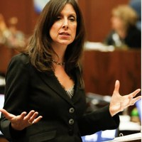
🎯 Prosecutor Spotlight
Beth Silverman
"The Sniper"
LA County District Attorney's Office · Major Crimes Division
Has never lost a murder case. Deputy DA since 1994. Earned her nickname for "picking off" defendants. She has obtained the death penalty in multiple capital cases. Prosecuted some of California's most notorious serial killers: Lonnie Franklin Jr. (the Grim Sleeper), Michael Hughes (the Southside Slayer), Chester Turner, and Samuel Little. Convicted a husband in a no-body cold case murder. Got a mother sentenced to death for killing her four daughters. Now assigned to the d4vd murder case.
Notable Prosecutions
Grim SleeperSouthside SlayerChester TurnerSamuel LittleSandi Nieves (death penalty)John Racz (no-body case)
On Celebrity Dockets